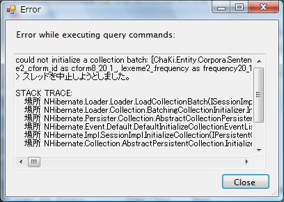

KWIC検索に入る前に、まずはコーパスにインポートされたデータを確認する最も簡単な方法としての 全文抽出機能を試してみることにします。
条件パネルのCorpusタブで対象コーパスが選択完了した状態で、コマンドパネルの"Search"ボタンを 押します。
{kind=link}
※Searchボタン横の下向矢印は未対応の機能です。
コマンドパネルには、Corpus欄に検索中のコーパス名を持つ行が現れ、コーパスの総語数Ncと異なり語数Ndが
表示されます。続いて検索結果数Nhitが表示されます。全文抽出機能でのヒット数は、文の総数となります。
RDBの検索が終了して結果の取得に移ると、Nret欄が0からNhitまで変化していきます。Nretが増加するに応じて
Kwic/Textビューに取得された文のデータが追加されていきます。
なお、全文抽出では、Nhit%とNret%は意味がありません(Nhit%=Nhit/Nc)。
{kind=link}
検索完了前にコマンドパネルの"Abort"ボタンを押すと、検索が強制的に中断されます。このとき、

のようなダイアログが出ることがありますが、強制中断したことを通知するものですので、 そのままCloseしてください。
検索が終了すると"Search"ボタンが再び押せるようになります。
大規模なコーパスで全文抽出のような検索を行うと、結果が多くなりすぎる場合がありますので、
途中で中断する必要がありますが、結果フィルタ条件により、あらかじめ取得数を絞ることも可能です。
ヒストリパネルには、新たなノード"[1]SentenceSearch"が追加されますが、このようなノードは検索を行うごとに 自動的に追加され、ノードをクリックすることにより以前に行った検索時の状態に戻すことができます。
係り受け情報のロードと表示
Cabochaデータをインポートした場合は、係り受け情報がアノテーション(Segment, Link)として付いていますので、 この情報もロードしてみます。
メニューの"View"-"Load Annotations"を選択するか、ツールバーのをクリックします。 コーパスのサイズにもよりますが、しばらく待つとKwic/Textビューに文節Segmentと係り受けLinkが表示されます。 角丸四角で表示されるのが文節で、矢印で表示されるのが係り受けです。
{kind=link}
※右側が欠ける場合は、TextカラムのサイズがView領域を超えているので、メニューの"View"-"Auto Adjust Row Width" を選択するか、ツールバーのをクリックしてください。Kwic/Textビューのサイズが自動調整されます。